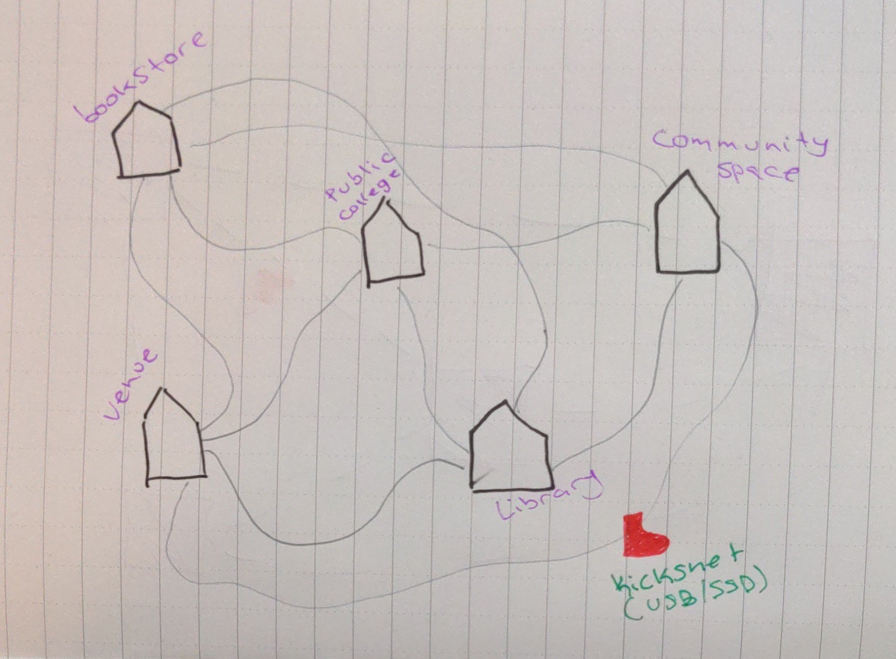
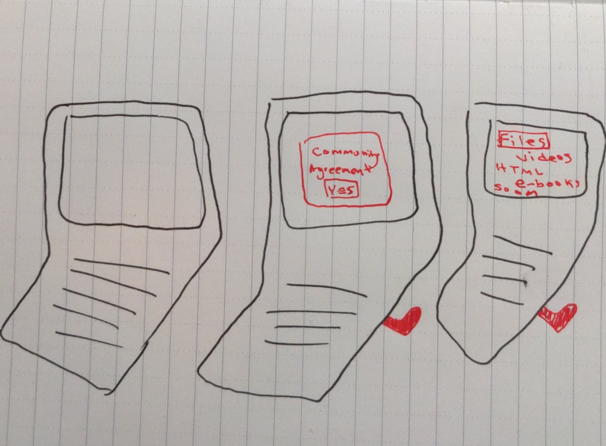

Kicksnet? What's that?
Kicknet is a fork of the Sneaket protocol which aims to bring community stewardship values & cybersecurity principles to knowledge sharing systems for over-suveillance & censored communities. This instance of the project is paticulaly concerned with providing a safe & useful space for LGBTQ youth & students of color in light of recent legislation in the U.S. State of Florida (and Texas) that aims to criminalize queer and trans histories as well as critical race theory in education.
What's a Sneakernet?
A Sneakernet is an offline protocol for sharing information. In short, running a Sneakernet is as simple as putting your sneakers on and meeting up with a friend to physically hand them the data you want to share. As simple as the concept sounds there are some really large & complex use-cases of it globally, for example El Paquete Semenal in Cuba which distributes a terabyte of data to millions of Cubans every week, supplying them with a bunch of digital media in light of low rates of internet access.
Example map sketch

What's the difference between Kicksnet & base Sneakernet?
Well Kicksnet is a Sneakernet just with a few intentional features that make it more ideal for a specific use-case - sharing sensitive information among within vulnerable communities. By setting up trusted access points with local community spaces, equiping data carriers with secure moderation software & basing the whole project on a highly collaborative open community guidelines document, Kicksnet aims to be a mode of sharing that is by & for the people who need it most.
Initial USB UI timeline sketch
